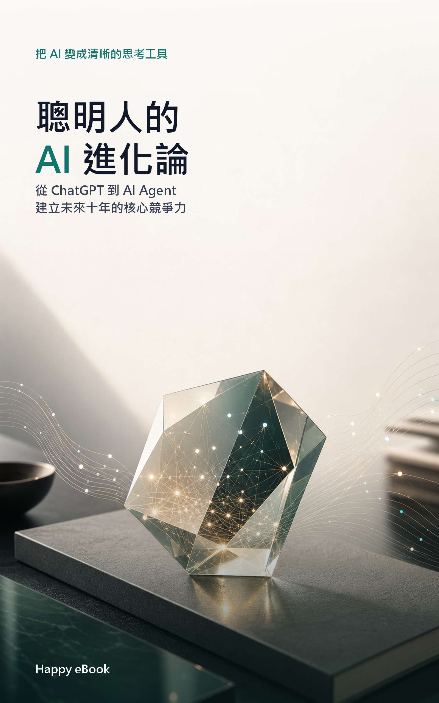

電子書
聰明人的 AI 進化論
從 ChatGPT 到 AI Agent，建立未來十年的核心競爭力

聰明人的 AI 進化論
從 ChatGPT 到 AI Agent，建立未來十年的核心競爭力
《聰明人的 AI 進化論》寫給已經開始使用 ChatGPT、也想進一步理解 AI Agent 的學生、教師、知識工作者與自學者。本書用白話方式整理 AI 如何成為思考工具，協助讀者從單次問答，逐步建立更清楚的提問、拆解、驗證與工作流程。內容聚焦在 AI 時代需要長期累積的核心能力：如何描述問題、整理上下文、判斷回答品質、把任務拆成可執行步驟，並理解 AI Agent 在學習、工作與創作中的實際應用。
作品介紹；目前未提供購買或試閱入口